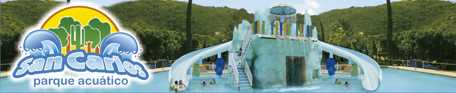
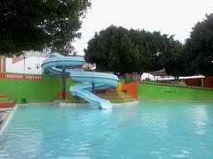
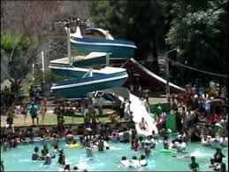

Desde hace más de 30 años, fue fundado San Carlos por un grupo de habitantes de la comunidad, con el fin de aprovechar las aguas termales que brotan de manera natural para convertirlo en un balneario, desde el principio siempre fue el objetivo ofrecer día a día instalaciones de primera calidad, y esforzarnos todos los días por satisfacer las necesidades de nuestros visitantes.

Amatitlanes se localiza en el Municipio Izúcar de Matamoros del Estado de Puebla México y se encuentra en las coordenadas GPS:
Longitud (dec): -98.493056
Latitud (dec): 18.612222
La localidad se encuentra a una mediana altura de 1280 metros sobre el nivel del mar.

Este es un balnerio que se encuentra en Tlapanala.
Km. 15 Carretera Izúcar de Matamoros Tlapanalá S/N
N/A
Izúcar de Matamoros
Teléfono: Tel. 01 244 44 25 388
México
Puebla